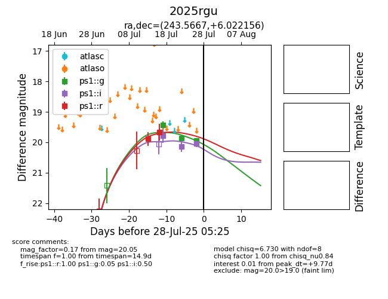

Target 2025rgu at 2025-07-28 05:25, see:
TNS: wis-tns.org/object/2025rgu
YSE: ziggy.ucolick.org/yse/transient_detail/2025rgu
alt names
2025rgu (yse,tns)
coordinates:
equatorial (ra, dec) = (243.5667,+6.02216)
galactic (l, b) = (18.7983,+37.46981)
photometry
last ps1::g=19.95, ps1::i=20.05, ps1::r=19.67
3 ps1::g, 3 ps1::i, 2 ps1::r detections
